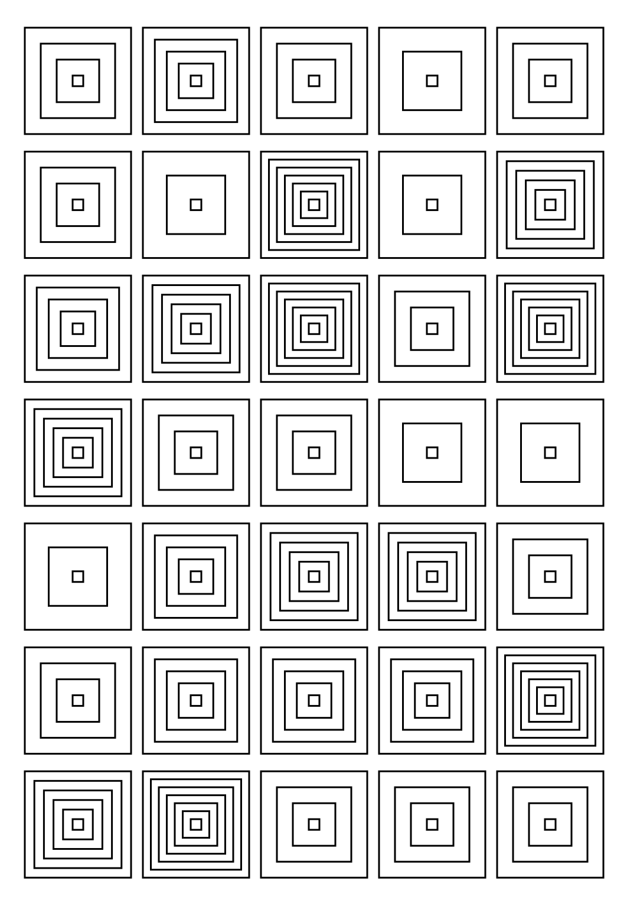

Testing nested loops, grid alignment, and drawing basic shapes on A5.
This simple sketch creates a grid of nested rectangles and circles. It's the perfect first test for a pen plotter to check alignment, scale, and ink absorption when paths are very close to one another.
Dimensions: A5 (148 x 210 mm)
